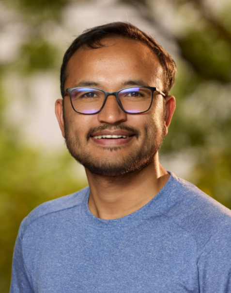

Sanat Kumar Paudel is a Nepalese fintech professional with more than two decades of experience in the banking and information technology sector.
He has held leadership roles in digital banking and payment technology, including at Nabil Bank and FoneNxt.
In April 2026, he was appointed CEO of F1Soft International, where he focuses on technology-driven financial innovation and digital transformation.
His work has contributed to the development of digital financial services in Nepal, while his leadership emphasizes innovation, technology, and customer-focused solutions.
He has extensive experience in IT1, digital banking, and financial technology2.

I'm Pretty!
Experience
CEO, F1Soft International (2026-Present): Joined on 3rd April 2022, leads the company's fintech operations.
CEO, FoneNxt (2022-Present): Leads the digital-banking department within FoneNxt Group.
Nabil Bank (Before 2022): Spent 13+ years in banking and led the bank's DigiBanking and digital-transformation initiatives.
Overall experience: More than 20 years in banking, ICT, digital transformation, and fintech.
Skills
skills
years
Digital Banking
13+ years
Information Technology
20+ years
FinTech
4+ years
Digital Transformation
10+ years
Technology Leadership
4+ years
Innovative Management
4+ years
Strategic Management
10+ years
Projects
Fonepay Digital Network: Development and expansion of digital payment infrastructure in Nepal.
DigiBanking Platform: Designed to reduce reliance on traditional branch-based banking.
FinTech innovation Projects: Development of technology-driven financial products and services.
Digital Financial Inclusion: Aimed at making digital financial services more accessible to Nepali users.